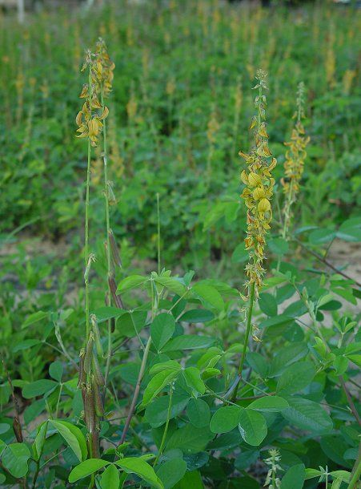
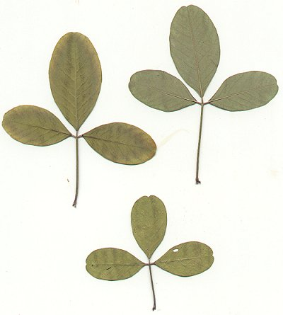
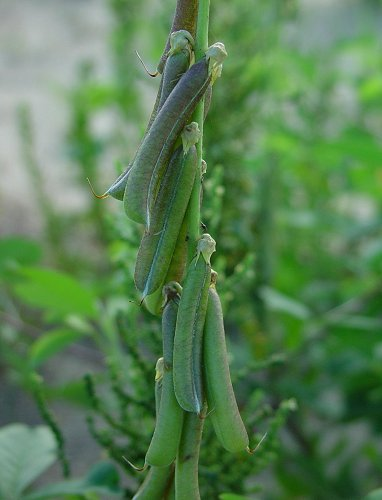

|
ECONOMICALLY
IMPORTANT PLANTS OF INDIA |
| Under-utilized Food and Fodder species and their wild relatives | Contributed by Ms.M.L Annapurna And Dr. Dhanapal, UAS, Bangalore |
Crotalaria mucronata
Taxonomic Details

----- Correct Name
----- Classification
----- Synonyms
----- Common Names
Other Biological Details
----- Habit and Habitat
----- Diagnostic Features
----- Reproductive Biology
---------- Breeding System
---------- Phenology
---------- Pollinators
---------- Seed Biology
-----------Seed Germination
------ Cultivation
----- Major Pests and Diseases
Economic Potential and Uses
----- Parts Used
----- Uses
----- Harvesting Practices
----- Produce and Products
----- Chemistry
----- Processing Techniques
----- Other uses
----- Economic Potential to the
Country
----- Export Potential
Miscellaneous Information
Literature

This
annual species can be found in the coastal plain and piedmont of North Carolina.
Status :
DIAGNOSTIC FEATURES
The plant grows to -2m tall and flowers in the summer. It
prefers sandy open ground and can be found along roadsides and in fields. The
plant is easy to ID in the field because of its big, inflated fruits and its
many yellow flowers.Perennial herbs or subshrubs; stems ascending or erect,
10-20 dm long, striate, glabrous or appressed short-pubescent. Leaves
trifoliolate, leaflets elliptic, ovate, or oblanceolate, 2.8-9.5 cm long,
1.2-4.5 cm wide, veins 6-12 on each side of midvein, upper surface glabrous or
sparsely pubescent, lower surface appressed short-pubescent, apex rounded to
acute, occasionally retuse, base cuneate or rounded, petioles 22-67 mm long,
stipules absent or minute and narrowly triangular, ca. 1 mm long. Flowers
9-15 mm long, 22-75 in terminal, somewhat lax inflorescences, rachis 15-40 cm
long (incl. peduncle), bracts linear-triangular, 3-4 mm long, ascending,
caducous, bracteoles at base of calyx, narrowly triangular; calyx densely
appressed short-pubescent, the tube 3-4 mm long, the lobes 3.5-4.5 mm long,
lateral lobes distinct at apex; petals yellow with lines near base, standard
9-12 mm long, 7-9 mm wide, striate, wings oblong-obovate, 6-10 mm long, 2.8-3.8
mm wide, keel petals striate, with nontwisted prolonged beak, margins ciliate;
elongated anthers 2.5-3.2 mm long, short ones 0.5-0.8 mm long. Pods
brown at maturity, 3.5-3.8 cm long, stipitate, stipe less than 3 mm long,
glabrous or sparsely appressed short-pubescent. Seeds ca. 36 per
pod, brown, up to 2.8 mm long, smooth." (Wagner et al.,
1999)var. obovata: Distinguishable by distinctly obovate leaflet
blades being retuse to rounded at apex and usually 3-7 x 1.5-4 cm. (Smith, 1985)
var. pallida: Eliptic, larger leaflet blades (6-13 cm long) that
are acute to rounded at apex. (Smith, 1985)
Breeding System :

Phenology :
Pollinators:
Seed Biology :
Seed Germination
:
Cultivation:
MAJOR PESTS & DISEASES
Pests:
Diseases:
Harvesting
Practices
Produce and Products
Export Potential
1. http://www.hawriverprogram.org/NCPlants/Crotalaria_mucronata_page.html
2. http://www.hear.org/pier/species/crotalaria_pallida.htm